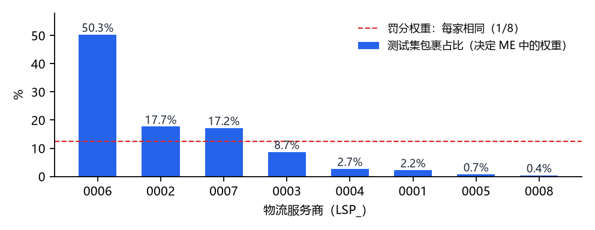
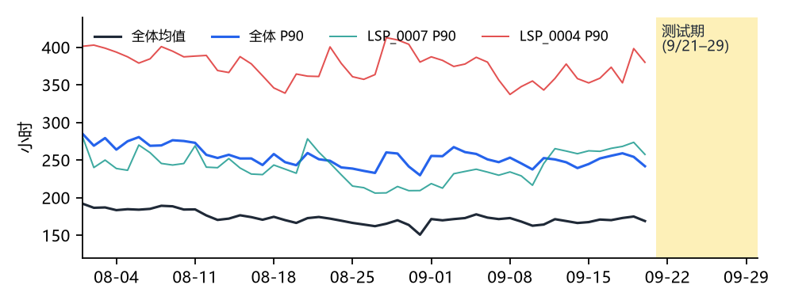
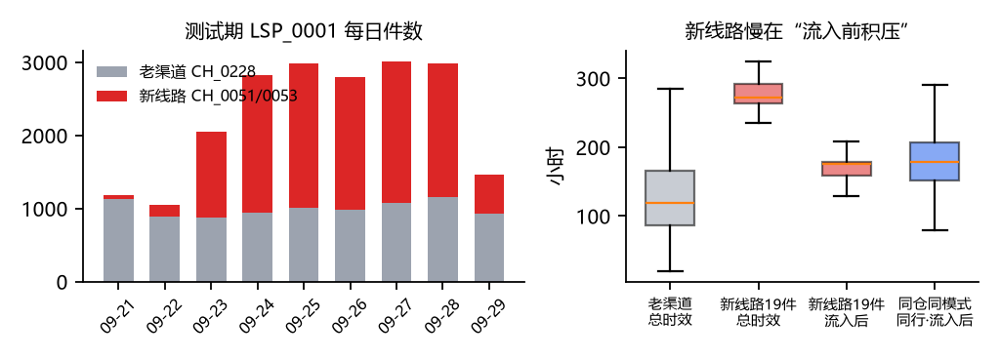
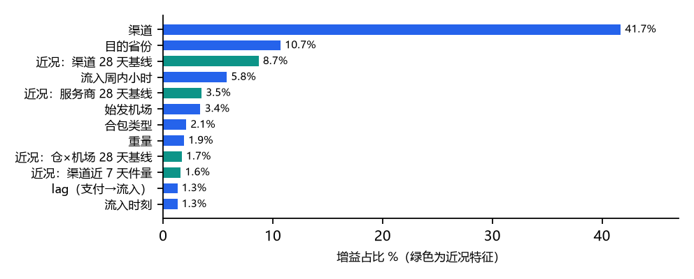
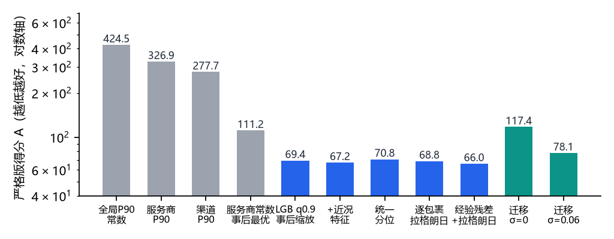
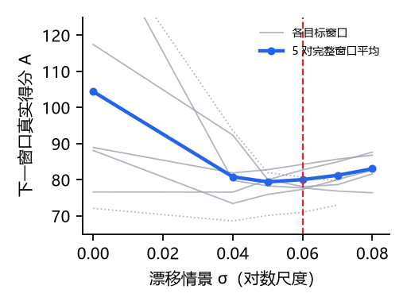
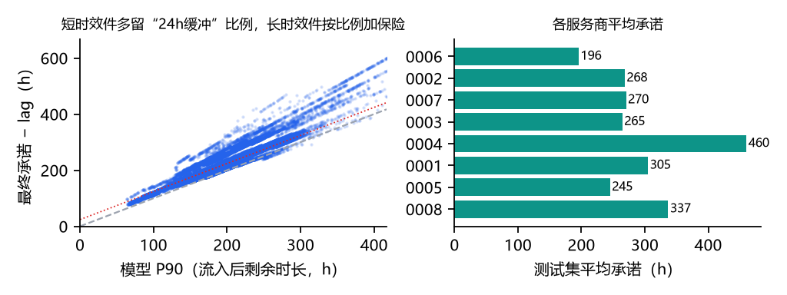

| 队伍名称 | 言出必达 |
| 所选赛题 | F4 包裹何时到？（全球智能履约赛道 · 客观预测） |
| 成员人数 | 1 人 |
| 成员分工 | 王岳行：模型设计与训练、方案验证、文档撰写 |
预测每个包裹的时效分布，再按罚分规则逐服务商定承诺并预留漂移余量；迁移验证严格版得分从 ~250 降到 ~80。
放弃的方向：不对单个包裹追求点预测精度（MAE/MAPE 不在评分里）；不使用任何决策时点之后的环节信息（时间戳只做历史统计）；不使用外部数据。
① 预测层：预测“流入→签收”的剩余时长 r（支付→流入的 lag 已知，T = lag + r̂），LightGBM 分位数回归 11 个分位点；特征为包裹属性、流入时段、lag 和近况特征（最近 3/7 天同渠道/同服务商/同仓同机场的时效偏离，训练时模拟 0–9 天信息滞后，与测试一致）。② 新线路兜底：训练窗口内样本不足 300 的渠道，改用不含渠道/服务商身份的“同行线路”模型，并经留渠道验证确定保险系数。③ 决策层：以模型 P90 为尺度、校准窗口真实残差为形状（按服务商×模型预测的尾部厚度分桶）构造经验条件分布；对每家服务商求解 min T − λ·P(准时) − μ·P(不晚到一天)，(λ, μ) 通过最小化“测试集平均承诺 × 包裹占比 + 漂移情景下的期望罚分”选出，罚分直接按赛题公式计算。AI 的作用：Claude Code 承担代码编写、实验执行与报告初稿，人负责赛题理解把关、实验设计决策与结果复核（详见《AI 协作记录》）。
| 指标（严格版 A，越低越好） | 基线或对照 | 本方案 | 怎么得到 |
|---|---|---|---|
| 严格版 A：可实现的迁移评估（5 对平均） | 249.2（渠道 P90 常数，三折平均） | 80.0（77.4–84.3） | 报告第 8 页；work/e7.jsonl、b0 基线日志 |
| 严格版 A：同窗事后最优（衡量锐度） | 110.6（服务商常数） | 66.0 / 62.4 | 9/12、9/3 折；work/e5_oracle.log |
| 漂移余量的价值（5 对平均） | 104.4（σ=0） | 80.0（σ=0.06） | 报告第 8 页表；work/e7.jsonl |
| 决策层 vs P90 缩放（迁移，σ=0.05，两对） | 77.0 / 84.8 | 76.0 / 80.1 | work/e5_transfer.log |
| LSP_0001 新线路的罚分暴露（同行分布推演） | 38–85h | ≈0（代价 +1.4h 平均承诺） | 报告第 4、8 页；留渠道验证 work/loco.log |
| 测试集平均承诺 / 最小承诺 | — | 238.0h / 78.4h | outputs/submission.csv（911,415 行，格式已校验） |
验证协议：三个时间切分折（切分点 8/25、9/3、9/12，各预测其后 9 天支付的包裹）；训练侧只用切分前支付、且在切分后 45 天内签收的标签（与测试时“标签观察到 11/5，距 9/21 约 45 天”的信息量对齐），验证真值用完整标签。迁移验证另用每 3 天一个切分点（8/22–9/18），构成 5 对完整 + 2 对不完整的“上一窗口定参 → 下一窗口打分”。
| 运行环境 | Windows 11 / 任意 64 位系统；Python 3.13；polars 2.1、lightgbm 4.7、numpy 2.5、pandas 3.1、matplotlib 3.11（见 requirements.txt）；内存 ≥32 GB；无需 GPU |
| 运行命令 | 在项目根目录：pip install -r requirements.txtpython src/00_convert.py F4_包裹何时到_资料包 work（CSV→parquet，约 1 分钟）cd src；python train_mq.py 2026-09-12（校准窗口 9/12–20 的“当时模型”，约 20 分钟）python train_mq.py test（测试集模型，约 20 分钟）；python ens_pred.py 2026-09-12 test（P90/P97 再训 2 个种子，约 30 分钟）python final.py --skip-train（兜底 + 决策层，约 15 分钟）→ outputs/submission.csv；参数见 config/final_cfg.json确定性训练（LightGBM deterministic、seed=42，采样 seed 固定）：干净目录两次独立运行的提交文件逐位一致；12 线程 CPU 约 2 小时 |
| 成果位置 | 结果文件 outputs/submission.csv；代码 src/；实验日志 docs/实验记录.md；代码仓库 https://github.com/Greatlovers/shein-f4-delivery-promise |
| 限制 | 无外部数据、无需联网（除安装依赖）；单机 CPU 即可 |
| AI 工具 / 开源代码 / 外部数据 | 用在哪里 | 来源或许可证 |
|---|---|---|
| Claude Code（Anthropic，模型 Claude Opus 5.5） | 数据分析、代码编写、实验执行、报告初稿 | 商业服务 |
| LightGBM / Polars / NumPy / pandas / matplotlib | 建模、数据处理、绘图 | MIT / MIT / BSD / BSD / PSF |
| 外部数据 | 无 | |
“预测条件分布 + 按评分规则做决策”的两层方案 · 时间切分验证 · 漂移稳健
记包裹 i 的承诺为 Ti、实际为 yi，服务商 g 的包裹占比为 wg。只要守约（多数包裹 y ≤ T），一定有 mean(T) > mean(y)，于是
mean(y) 与决策无关，mean(T) = Σg wg·meang(T)。因此评分在服务商之间完全可分，每家服务商独立求解：
由此得到四个直接影响方案的判断：
| 观察 | 证据 | 方案上的含义 |
|---|---|---|
| ① 本题是“约束下最小化平均承诺”，不是点预测 | MAE 类指标不在评分里；ME 是全体均值之差 | 需要每个包裹的条件分布，而不是一个点 |
| ② 严重超时 3% 是最紧约束 | 服务商常数承诺的事后最优：准时率被抬到 92–97% 才能把严重超时压到 3%（三折得分 108–113） | 决策必须同时看 P90 和 P97–P99.5 的长尾 |
| ③ 杠杆不对称 | 图 1：LSP_0006 占 50.3%，LSP_0008 仅 0.43%，但罚分等权 | 多给小服务商 1pp 准时率几乎免费；大服务商要精打细算，甚至可“小幅超限” |
| ④ 罚分是线性软约束 | 对 LSP_0006，把严重超时从 3.8% 压到 3% 的平均承诺代价 > 4h（即 >5h/pp） | 用“期望罚分”而非硬约束做优化 |

数据规模：训练 5,267,074 件（8/1–9/20 支付），测试 911,415 件（9/21–29 支付）；8 家服务商、239 个渠道、9 个发货仓。时效均值 174h、P90 258h、P99 389h，长尾很重。



训练窗口内样本不足 300 的渠道（测试中 14,759 件，主要是 LSP_0001 新线路和 LSP_0006 的 CH_0218）不信任渠道身份，改用去掉渠道、服务商 ID 的同一组特征训练的兜底分位数模型（仓×模式×机场×路由×省份×时段等可迁移属性）。留渠道验证：在 9/12 折把 12 个 MC_0003 渠道整体从训练中拿掉，兜底模型在这些“没见过的渠道”上 P90 整体覆盖率 89.4%（校准良好），但渠道间差异大（最慢渠道比兜底中位数慢 ~22%）；P99.5 在最差渠道上准时率 93.2%、严重超时 5.0%，乘 1.15 后为 96.5% / 2.4%。据此 LSP_0001 新线路取兜底 P99.5 × 1.15；其余稀有渠道只占各自服务商 <3%，取兜底 P99。
直接用 11 个分位数插值成逐包裹分布时，P97–P99.5 的尾部模型噪声较大：在 9/12 折上，逐包裹尾部分布 + 拉格朗日的事后得分为 68.79，反而不如“P90 × 服务商系数”的简单做法（67.2）。因此我们改为半参数结构：
Gg,b 是校准窗口里真实残差的经验分布，按服务商 g 与“模型预测的尾部厚度”log(P97/P90) 的五分位桶 b 分组——既保留模型对“哪类包裹尾巴更长”的判断，又让形状由真实数据校准。
对每个包裹，候选承诺取 Tk = lag + P90·ezk（zk 为 G 的 43 个分位点，另可选一个兜底极小承诺），其准时概率 ak = G(zk)、不晚到一天的概率 bk = G(log(ezk + 24/P90))。服务商 g 内统一一对价格 (λg, μg)：
这是“平均承诺最小，准时率与不严重超时率达标”的对偶解：λ、μ 是每 1 个百分点准时率/不严重超时率的“影子价格”（小时）。效果是短时效件（P90 小，24h 缓冲相对大）只需略高于 P90 就能保证不严重超时，长时效、长尾件则按比例多加保险；同一服务商内，保险费花在边际收益最高的包裹上。
| 服务商 | 测试占比 | λ（h/准时） | μ（h/不严重超时） | 平均承诺 h | 校准窗口(9/12–20) 准时率 / 严重超时 |
|---|---|---|---|---|---|
| LSP_0006 | 50.31% | 409 | 204 | 195.8 | 93.9% / 3.0% |
| LSP_0002 | 17.65% | 1036 | 0 | 268.3 | 95.5% / 2.8% |
| LSP_0007 | 17.21% | 483 | 1207 | 270.3 | 95.7% / 2.8% |
| LSP_0003 | 8.72% | 856 | 0 | 264.5 | 96.6% / 1.7% |
| LSP_0004 | 2.71% | 3584 | 1433 | 460.3 | 96.9% / 2.7% |
| LSP_0001 | 2.23% | 613 | 1962 | 305.1 | 97.1% / 1.9% |
| LSP_0005 | 0.74% | 557 | 4458 | 245.1 | 98.6% / 0.7% |
| LSP_0008 | 0.43% | 1752 | 350 | 336.9 | 97.9% / 1.3% |
| λ、μ 单位为“小时 / 每 1 单位概率”；μ=0 表示该服务商的准时率约束更紧、严重超时自然满足。LSP_0001 的平均承诺含新线路（兜底 P99.5×1.15）。 | |||||

| # | 版本 | 8/25 | 9/3 | 9/12 | 为什么这样改 / 结论 |
|---|---|---|---|---|---|
| 1 | B0 全局 P90 常数 | 417.98 | 490.50 | 424.50 | 起点。一刀切，长尾服务商 LSP_0004 严重超时 26–28% |
| 2 | B1 服务商 P90 常数 | 201.92 | 268.43 | 326.92 | 分服务商后罚分大降，但漂移使准时率在 82–96% 间摆动 |
| 3 | B2 渠道 P90（近 21 天） | 190.12 | 279.68 | 277.69 | ME 降到 ~55h，严重超时仍普遍 5–10%：长尾没被管住 |
| 4 | 参考：服务商常数事后最优 | 108.11 | 112.53 | 111.17 | 不可实现。说明常数承诺的天花板；严重超时是最紧约束 |
| 5 | LightGBM 分位数(q0.9) + 事后缩放 | 67.84 | 63.91 | 69.42 | 条件模型：同样守约，平均承诺降 ~40h |
| 6 | + 历史统计特征（城市尾程等） | 67.77 | 66.80 | 71.13 | 留一周计算防泄漏后无增益 → 弃用 |
| 7 | + 近况特征（模拟 0–9 天滞后） | 64.59 | 63.52 | 67.20 | 三折均降 → 保留 |
| 8 | 多分位 11 个 + 统一分位水平（事后） | — | — | 70.82 | 直接用尾部分位模型，反不如 P90 缩放（67.2） |
| 9 | 多分位 + 逐包裹拉格朗日（事后） | — | — | 68.79 | 拉格朗日有效（−2.0），但逐包裹尾部噪声拖累 |
| 10 | 经验残差形状 + 拉格朗日（事后） | — | 62.43 | 66.04 | 最终决策层；同窗 P90 缩放为 63.51 / 66.93 |
| 11 | 开放“极小承诺/牺牲”候选（事后） | — | 62.42 | 66.05 | 几乎不变 → 最优解不靠牺牲包裹 |
| 12 | 可实现：上一窗口校准，σ=0 | — | 88.11 | 117.44 | 窗口内冲击（LSP_0007 变慢 ~30%）带来 22–59h 罚分 |
| 13 | 可实现：三窗等权合并，σ=0.05 | — | — | 95.65 | 老窗口稀释最近信息，不如单窗（80.07） |
| 14 | 第二轮：迁移验证扩到 5+2 对，重选 σ 与校准方式 | — | — | — | σ=0.05/0.06 并列最好（79.4/80.0）；合并、细分、更新鲜窗口、加偏置均更差（见第六节） |
| 15 | 第二轮：预测层 14 项改进尝试（事后） | — | — | 65.59 | 仓库负荷、目的地近况等新特征与加权、调参共 10 项无增益；换 CatBoost/XGBoost 单模更差，融合仅 −0.3，弃用；3 个随机种子平均（P90 缩放 67.02→66.67，完整决策层 66.04→65.59），采用 |
| 16 | 最终：最近窗口校准，σ=0.06，P90/P97 三种子平均 | — | 77.35 | 78.10 | 5 对迁移平均 80.0（77.4–84.3）；迁移验证用单种子模型 |

流程与测试完全一致：在目标窗口之前已结束的 9 天窗口上（用当时的模型预测 + 真实时效）选 (λ, μ)，用到下一窗口并按官方公式打分。第二轮把切分点加密到每 3 天一个，得到 5 对完整窗口 + 2 对不完整窗口（9/15 为 6 天、9/18 为 3 天，表中 * 列）。不留余量时 5 对平均 104.4，冲击窗口（9/12、9/15）罚分很重；σ 在 0.05–0.06 最好（79.4 / 80.0，7 对平均 78.5 / 78.8，差距在噪声内），σ=0.06 在冲击窗口上更稳，且测试期临近国庆，故保留 0.06。损失曲线不对称：留少了罚得重，留多了只是慢一些。下半部分的 6 种校准方式都不如"只用最近一个窗口"，差距主要出在冲击窗口 9/12——更旧或更细的数据会让决策层对最近的冲击反应变慢。
| 配置（目标窗口 →） | 8/31 | 9/3 | 9/6 | 9/9 | 9/12 | 5 对平均 | 9/15* | 9/18* |
|---|---|---|---|---|---|---|---|---|
| 不留余量 σ=0 | 150.9 | 88.1 | 76.6 | 88.9 | 117.4 | 104.4 | 150.3 | 72.1 |
| σ=0.04 | 79.8 | 73.4 | 76.6 | 81.9 | 92.4 | 80.8 | 93.6 | 68.6 |
| σ=0.05 | 78.3 | 76.0 | 80.0 | 82.8 | 80.1 | 79.4 | 82.0 | 70.1 |
| σ=0.06（采用） | 77.8 | 77.4 | 82.7 | 84.3 | 78.1 | 80.0 | 80.7 | 71.0 |
| σ=0.07 | 76.9 | 80.0 | 85.0 | 85.7 | 78.6 | 81.2 | 79.7 | 73.0 |
| σ=0.08 | 76.4 | 82.7 | 87.6 | 86.8 | 81.6 | 83.0 | — | — |
| 合并最近 3 个窗口（σ=0.06） | 77.8 | 75.8 | 80.2 | 85.8 | 85.1 | 80.9 | — | — |
| 合并 t−9、t−18 两个窗口（σ=0.06） | 77.8 | 77.4 | 82.7 | 81.0 | 84.4 | 80.7 | — | — |
| 再加入更新鲜的 6 天、3 天窗口（σ=0.05） | 73.5 | 77.8 | 79.6 | 80.7 | 96.5 | 81.6 | — | — |
| 残差形状按信息滞后细分（σ=0.06） | 78.1 | 76.7 | 80.9 | 83.2 | 85.8 | 80.9 | — | — |
| 残差形状按 P90 水平细分（σ=0.05） | 79.7 | 74.5 | 79.6 | 84.4 | 83.6 | 80.3 | — | — |
| 漂移情景加偏置 +0.02（σ=0.05） | 76.2 | 79.6 | 84.5 | 84.9 | 79.5 | 80.9 | — | — |
测试中 LSP_0001 的新线路 11,347 件没有可校准历史。我们假设其流入后时效服从同仓（WH_0005）、同模式（MC_0003/OT_0002）、同始发机场与路由的同行线路分布，做蒙特卡洛推演：服务商 P90 常数承诺 → 新线路准时率 78.7%、严重超时 11.2%，LSP_0001 整体罚 ~38h；主模型 P90 级承诺 → 67.6% / 16.7%，罚 ~85h；我们的兜底 P99.5×1.15 → ≥97.6% / ≤1.5%，整体 97.2% / 1.9%，罚分≈0。多付的平均承诺约 115h/件 × 1.24% ≈ 1.4h，是一笔“用 1.4h 换掉 40–85h 风险”的保险（推演基于确定性重训前的兜底承诺 306.5h，最终为 314.7h，覆盖率只会更高）。其余 3,412 件稀有渠道件只占各自服务商 <3%，取兜底 P99（留渠道验证整体覆盖 98.1%）。

测试集 911,415 件的平均承诺 238.0h、中位 235.1h、最小 78.4h，没有不合理的极小承诺。决策层的效果在左图清晰可见：同一服务商内，承诺相对模型 P90 的加成从短时效件的中位 +17h（P90≈137h）到长时效件的 +34h（P90≈260h）逐级递增，比值集中在 1.02–1.39——短件靠“24h 宽限”自然满足严重超时约束，长件按比例多收保险费。各服务商平均承诺差异很大：LSP_0006 196h，LSP_0004 因长尾极重达 460h；最大的 LSP_0006 在校准窗口上卡在 93.9% / 3.0%，小服务商（LSP_0005/0008）则留出明显余量——正是“杠杆不对称”的定量结果。若测试期平均实际时效与 9 月相近（~170h），预期 ME 约 68h。
| 环节 | 做法 |
|---|---|
| 每日滚动 | 每天用最近 35 天已签收数据重训分位数模型；用最近一个 9 天窗口（“当时模型”的预测 + 真实时效）重估经验残差与 (λ, μ)。全流程单机 CPU 约 1 小时。 |
| 漂移告警 | 监控近 3 天各服务商实际准时率与模型预期的偏离；超过 2σ 时临时提高该服务商的 μ（多收保险费），并排查头程/清关环节。 |
| 新线路冷启动 | 新渠道上线首两周按“同行线路兜底 P99.5 × 保险系数”承诺；积累 300 件签收后切回主模型。开线积压期（lag 异常大）单独监控。 |
| 用户体验 | 承诺对外展示可取整到天；对长尾风险高的包裹（P97/P90 大）在下单页提示“可能受清关影响”。 |
| 服务商管理 | λ、μ 就是每个服务商“准时率每提升 1pp 需要多承诺多少小时”的价格，可直接用于和服务商谈 SLA：长尾越重，用户承诺越慢、转化越低。 |
| 文件 | 作用 |
|---|---|
src/00_convert.py | CSV → parquet |
src/common.py, feats.py, recency.py | 读数、决策时点特征、近况特征（含信息滞后模拟）、官方公式评分 |
src/model.py, train_mq.py | 时间切分折构建（45 天观察期对齐）、LightGBM 多分位数训练 |
src/fallback.py | 稀有/新渠道兜底模型、留渠道验证 |
src/policy.py, policy_emp.py | 条件分布、经验残差形状、拉格朗日分配、期望罚分选参 |
src/ens_pred.py, final.py | P90/P97 三种子平均；最终流水线 → outputs/submission.csv（参数 config/final_cfg.json） |
src/b0_baselines.py, e1–e9_*.py | 基线与两轮实验（e6–e9 为第二轮：加密切分点、5+2 对迁移验证、预测层改进尝试；日志 work/*.log、work/e7.jsonl，汇总 docs/实验记录.md） |
本报告第 1—2 页为官网《作品说明单》；AI 使用细节见单独提交的《AI 协作记录》。